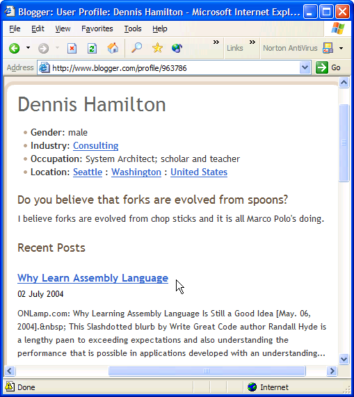

Incident Report
X040702
Blogger FTP Corruption
|
|
Incident Report
X040702 |
Category: Data Corruption - Transient? Incident ID: X040702 Priority: 9 - Urgent Status: Develop Workarounds and Incident Containment Procedures Subject: Blogger.com version 5.15 Repaired in: ?.?? Assigned To: Dennis Hamilton Reported By:
Dennis Hamilton (2004-07-02)Date Opened: 2004-07-15 Date Closed: none
On Friday 2004-07-02 at around 04:44, I was posting a note on "Why Learn Assembly Language" from my account on Blogger.com to my Professor von Clueless in the BlunderDome blog. The posting was reported to be successful. However, I could no longer view my blog default page or the page where the article was supposed to have been loaded.
I discovered that all files uploaded along with the posting consisted of corrupted binary information. Repeating the posting did not change anything. Four files, including the Atom site feed, had been corrupted. In addition, my profile page contains a link to the corrupted posting.
I submitted a trouble report to Blogger.com on the morning of July 2. I then began posting notices that the blogs should not be updated or commented. Later that same day, I changed the access rights of the account that I have Blogger.com use for FTP so that no more transfers could take place. I received a confirmation of my report from Blogger.com later that day.
I restored the material on Professor von Clueless to the last backup. I did not overcome the problem, I simply restored what I could and left the site locked-down.
On the afternoon of Tuesday, 2004-07-06, I received a response from Blogger support that said
"I visited your blog and you appear to have resolved the problem yourself. Please let us know if you have any further questions or concerns."
I have not resolved the problem myself, I had simply restored data to the point preceding the corruption. I don't know how it happened or whether or not it will happen again, so I am undertaking a slow part-time process to capture everything about the incident and then restore operation. I will not commit much new work to the blog until I am confident that I am prepared to confine damage and recover from any recurrence of the incident.
As part of the lockdown process, I posted modified default pages for all of my blogs and I also learned how to place anouncements directly into the Atom site feeds without relying on Blogger.com.
My first priority is to have operation of the blogs restored and to have a process in place for rapidly recovering from any additional failures of this or some other nature.
Then I will re-open the problem report with Blogger.com and let them know that I do not consider the situation resolved. I can then offer them complete incident information for them to use as they see fit in establishing the root cause and determining whether the situation is resolved.
I also see this as important practice for capturing incidents, quickly recovering, and then completing any software forensics for all misadventures that arise involving these web sites and the blogs on them.
Workarounds or anything else we know
The following files have been captured as part of this incident report:
- The corrupted 2004/07/why-learn-assembly-language.asp (.bin file) article file.
- The corrupted default.asp (.bin file) blog home page file.
- The corrupted clu-atom.xml (.bin file) site feed file.
- The corrupted 2004_06_27_clu-chive.asp (.bin file) archive page.
The files have been replaced if there were previous versions that could be restored. Other files have been removed so that there is no danger of a blog reader inadvertently retrieving a corrupted Atom site feed or blog web page.
I also learned [2004-08-02] that my profile on Blogger.com contains a link to where the corrupted article post was stored:

There's the initial e-mail I sent and the responses I received, including the last one thinking I had solved the problem because I had rolled back the impacted pages. I need to re-open the incident with Blogger.com when I have solved my urgent needs and have time to interact with them again. This incident report will provide everything that they need.
- 2004-07-02 Locked-down the sites and made manual updates to the blog default pages. Blogger is locked out and any pages that are restored or deleted have had their corrupted versions quarantined.
- 2004-07-15 Setup Atom Feed with Lockdown information
2004-07-15 Create incident page and job jar- 2004-07-24 Complete providing Lockdown Feed Notices that tie to Incident materials.
This led to recognition of Invalid Atom discrepancies and another incident report.
- 2004-07-30 Use Feed to announce restoration approach
- 2004-08-03 Create slam-down pages and verify on Wingnut
- Bring Wingnut to readiness for restoration
- Restore the blogs as correct FTP is confirmed for each blog
- Complete analysis and updating of notes
|
|
You are navigating Orcmid's Lair |
created 2004-07-15-22:48 -0700 (pdt) by orcmid |